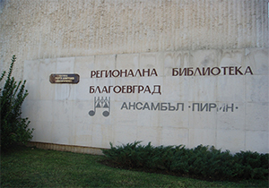

Регионална библиотека - Благоевград
Регионална библиотека “Димитър Талев” е основана през 1953 година с Решение на Изпълнителния комитет на ОНС като Окръжна библиотека. Целта е да се създаде голяма масова библиотека с професионално библиотечно обслужване, която да е част от изграждащата се национална библиотечна мрежа. На 1 ноември библиотеката отваря врати за обществеността на град Благоевград. През 1954 г. е включена в системата на законния депозит и започва да получава по един безплатен екземпляр от българската печатна продукция. От 1953 до 1987 г. библиотеката функционира като окръжна, а в следващите години като универсална научна. От м. юли 2000 г., с постановление на Министерски съвет, библиотеката получава статут на регионална. През 1978 г., когато се чества 25-годишния юбилей библиотеката е наградена с орден „Кирил и Методий” I – ва степен. Регионална библиотека „Димитър Талев” е най-голямата в Югозападна България с библиотечен фонд над 380 000 библиотечни единици, в която работят 29 библиотечни специалисти От 1998 г. библиотеката е член на ББИА (Българската библиотечно-информационна асоциация) Библиотеката притежава и работи с 46 модерни компютърни конфигурации на стойност над 100000 лева, локална компютърна мрежа и 8 собствени бази данни, налични в локален и онлайн вариантДнес Регионална библиотека „Димитър Талев” е модерен, широко отворен и достъпен културно-информационен институт, домакин на изложби, концерти, срещи с творци на изкуството и културата. Годишно се обслужват над 10 000 потребители, които реализират около 40 000 посещения и заемат около 90 000 библиотечни документи.